P21.S01
Trước · r02 Sau · r03
Sau · r03
P21.S02
Trước · r02 Sau · r03
Sau · r03
P21.S03
Trước · r02 Sau · r03
Sau · r03
P21.S04
Trước · r02 Sau · r03
Sau · r03
Từng ca lỗi trước–sau
Ảnh tĩnh đi kèm kiểm tra hành vi trong báo cáo; mở từng mục để xem. Dữ liệu dài/ngày sai/count thiếu là fixture thử giới hạn tại view, không phải dữ liệu kho thật.
F15 · Thông tin đối chiếu dồn thành đoạn văn
Giữ nguyên xuống dòng và khoảng trắng trong dialog hướng dẫn/copy lỗi; nội dung dài cuộn, nút Đóng luôn truy cập được.
Trước sửa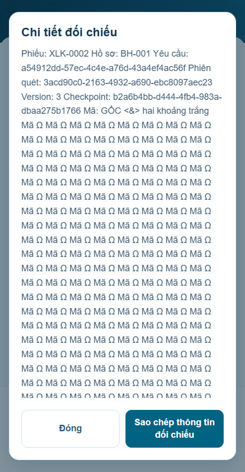
Sau sửa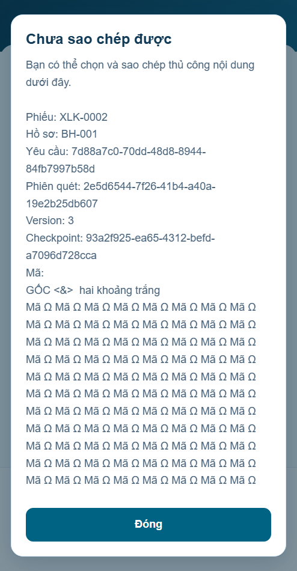
F01 · Tải xong giành focus khỏi nút Back
Giữ control người dùng đang chọn, không đưa focus về heading.
Trước sửa Sau sửa
Sau sửa
F02 · Tải xong cuộn về đầu
Lấy vị trí cuộn ngay trước cập nhật DOM, giữ vị trí người dùng vừa đọc.
Trước sửa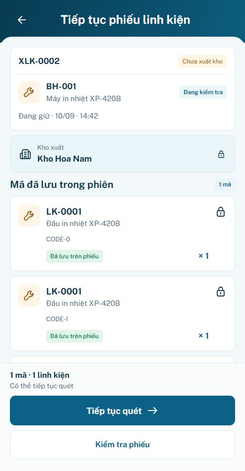
Sau sửa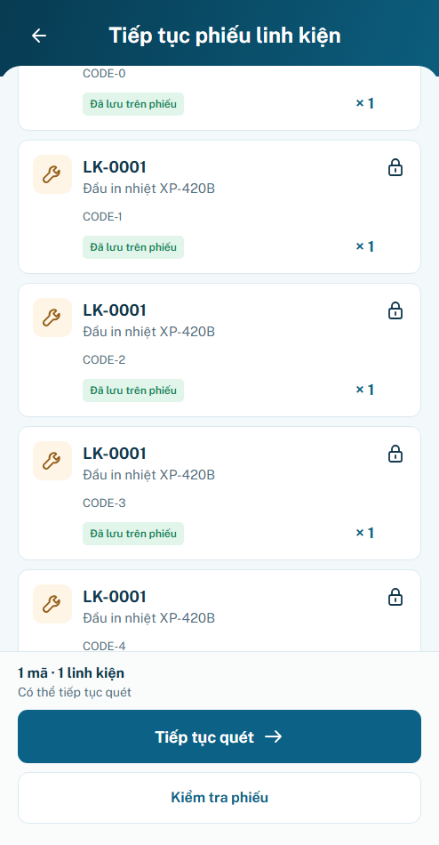
F03 · Reader tự đóng khi checkpoint trả về
Hoãn repaint khi dialog còn mở; đóng xong cập nhật và trả focus về reader.
Trước sửa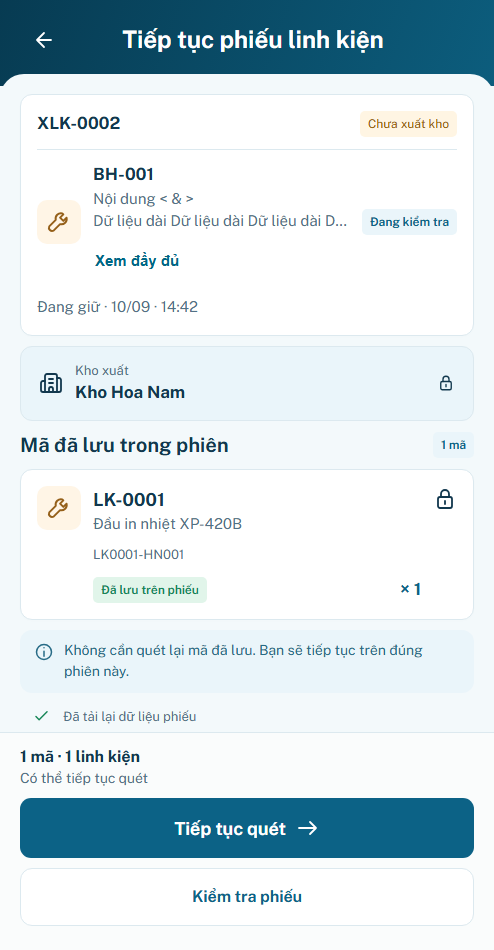
Sau sửa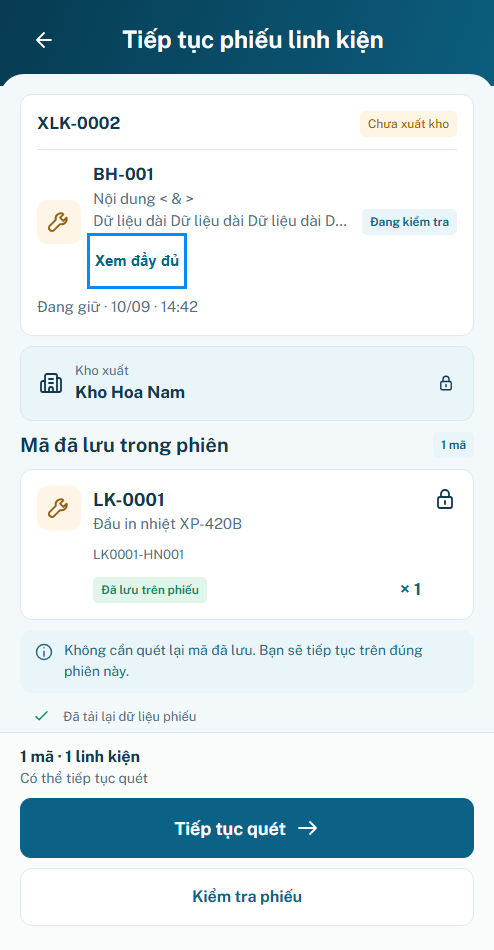
F04 · Giành focus khỏi control bên ngoài app
Không chuyển focus nếu người dùng đã chuyển sang control khác trong khi chờ.
Trước sửa Sau sửa
Sau sửa
F05 · Ngày checkpoint lỗi làm hỏng render
Dùng parser thời gian chung, hiển thị Chưa xác minh; không gọi formatter với ngày sai.
Trước sửaSau sửa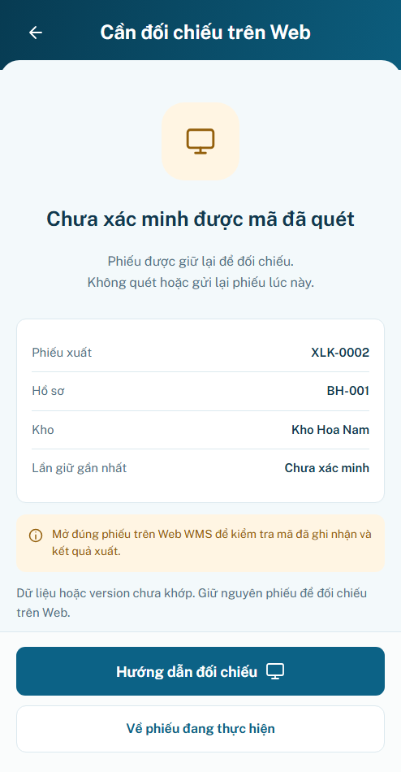
F07 · Tổng số dài tràn footer
Cho text dài xuống dòng trong footer, giữ CTA và dữ liệu gốc.
Trước sửa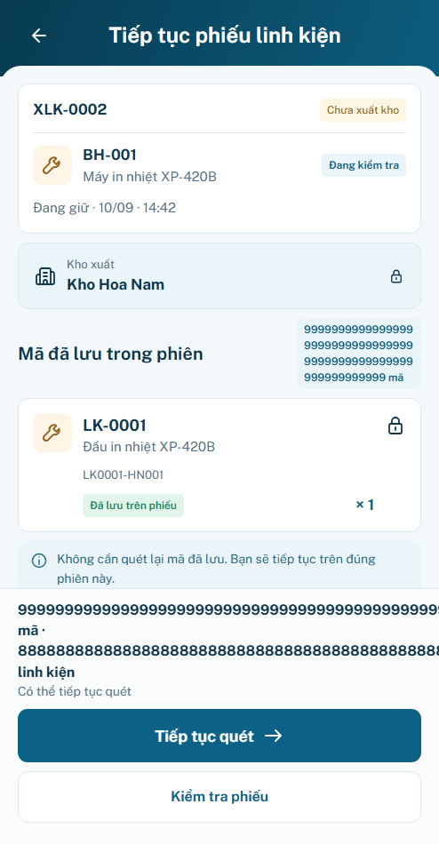
Sau sửa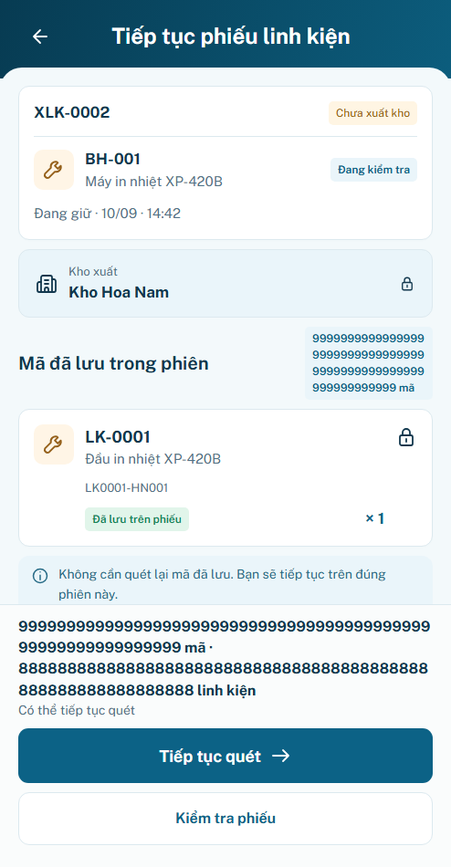
F08 · Thiếu số lượng hiện null/undefined
Hiển thị Chưa xác minh; không tự chuyển thành 0. Số 0 hợp lệ giữ riêng.
Trước sửa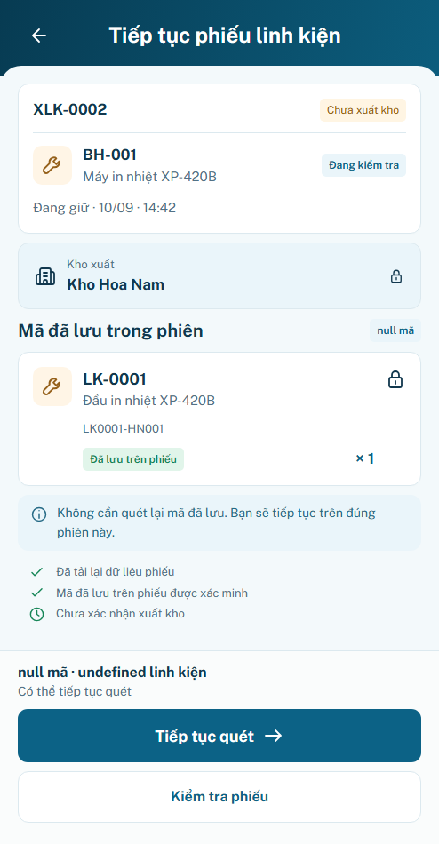
Sau sửa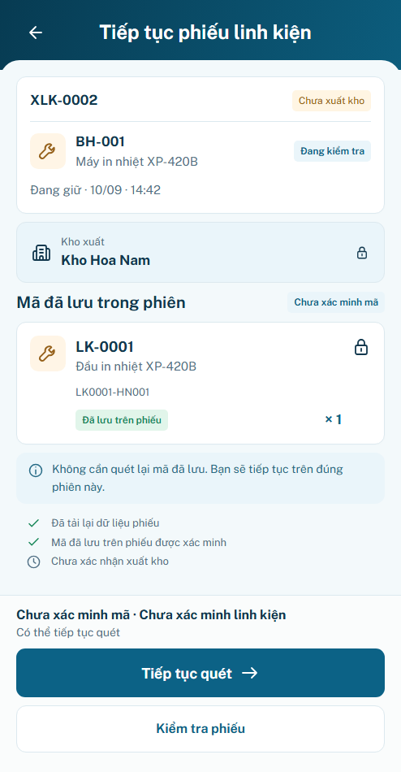
F09 · Icon chưa xuất có màu xanh thành công
Clock chưa xác nhận xuất giữ màu trung tính; chỉ checkpoint được xác minh dùng xanh.
Trước sửa Sau sửa
Sau sửa
F10Escape · Escape sau xác minh chưa xuất làm kẹt S04
Đóng thông báo bằng Escape vẫn đọc lại checkpoint trước khi cho phép tiếp tục.
Trước sửa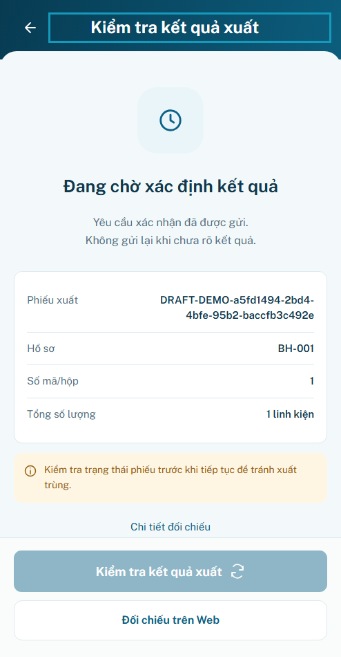
Sau sửa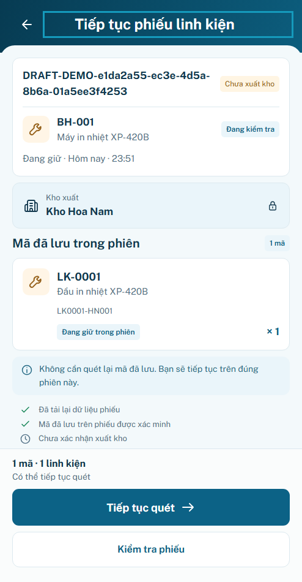
F10Back · Back sau xác minh chưa xuất làm kẹt S04
Native Back đóng thông báo có cùng hậu điều kiện với Đóng; giữ nguyên request/version.
Trước sửaSau sửa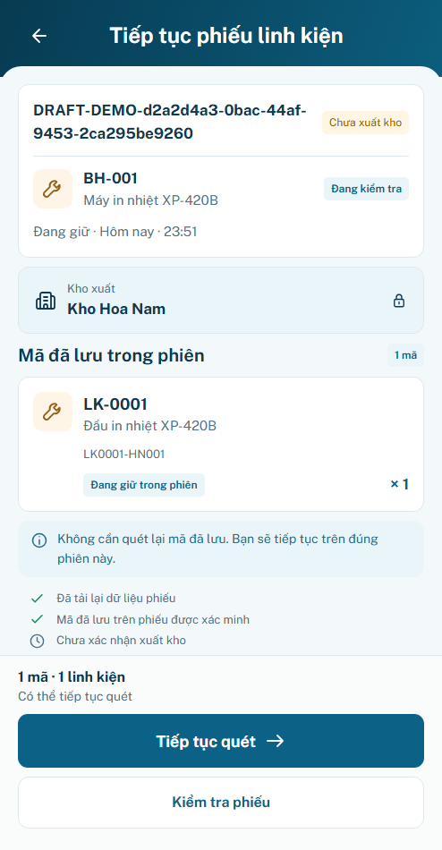
F11 · Kết quả copy cũ xuất hiện sau khi cùng phiếu đổi định danh
So sánh lại payload sau Promise; bỏ phản hồi cũ nếu version/request/checkpoint đã đổi.
Trước sửa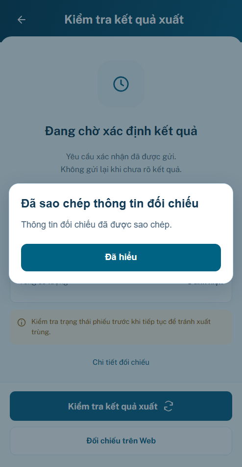
Sau sửa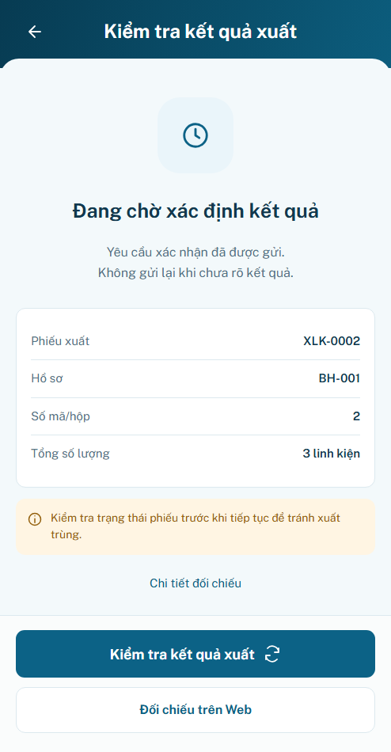
F12 · Cập nhật owner làm mất focus của Xem đầy đủ
Ghi nhớ reader bằng nhãn/thứ tự; phục hồi sau khi component chung tạo lại trigger, không giành focus mới.
Trước sửa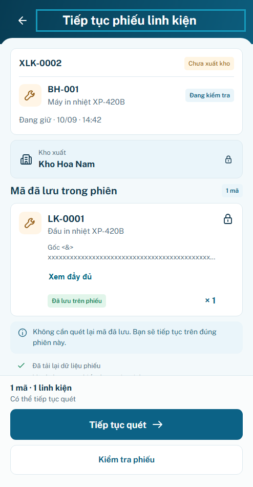
Sau sửa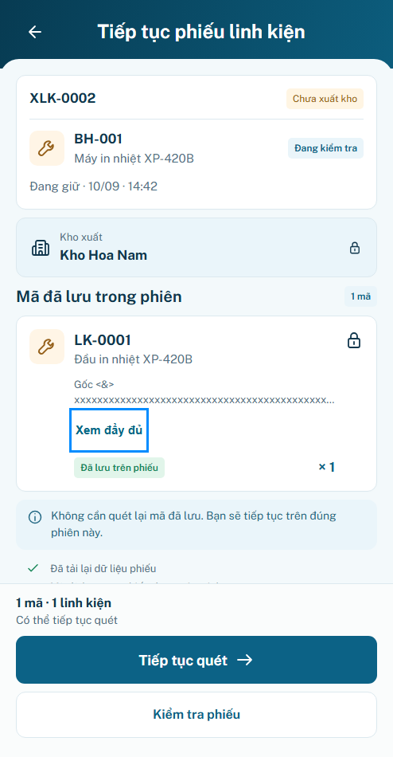
F13 · Header Back rồi native Back mở lại chi tiết vừa rời
Tiêu thụ đúng entry danh sách trước đó nếu cùng scope live/mẫu; khóa nhấn Back trùng trong lúc chuyển.
Trước sửa Sau sửa
Sau sửa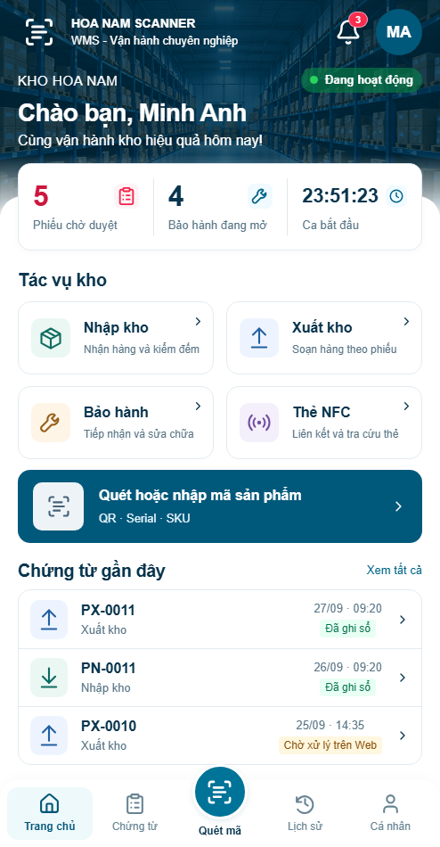